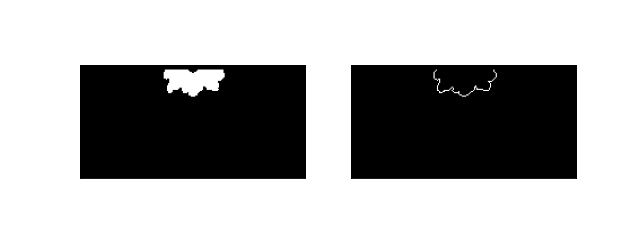
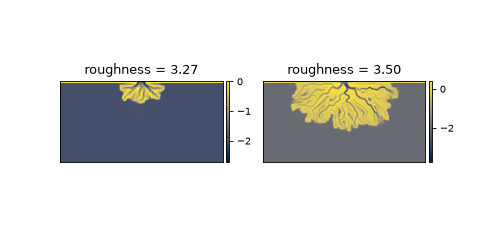

sandplover.plan.compute_shoreline_roughness_area¶
- sandplover.plan.compute_shoreline_roughness_area(shore_mask, land_mask, calculate_length=False, **kwargs)¶
Compute shoreline roughness, using land area.
Computes the shoreline roughness metric:
\[R = L_{shore} / \sqrt{A_{land}} \approx (N \times dx) / (\sqrt{A_{land}}\]given binary masks of the shoreline and land area. The length of the shoreline is computed as the number of shoreline pixels if calculate_length=False and the
compute_shoreline_lengthfunction is used if calculate_length=True.Changed in version 0.5: This function was formerly named compute_shoreline_roughness.
Important
The theoretical basis of the calculation assumes a (semi-, quarter-, etc) circular shape of the land area, as would be expected for a fan or delta. This calculation will still give a valid result on a straighter shoreline, but the absolute value of the result may be difficult to interpret in physical sense.
See also
This function is similar to, but distinct from
compute_shoreline_roughness_coefvar, which uses an approach based on the deviation of the shoreline distance at all points from the mean shoreline distance.See also
For a measure of shoreline roughness that is more appropriate for a straight shoreline, see
compute_shoreline_rugosity.Warning
shore_mask and land_mask must share coordinates, including grid resolution.
- Parameters:
shore_mask (
ShorelineMask,ndarray) – Shoreline mask. Can be aShorelineMaskobject, or a binarized array.land_mask (
LandMask,ndarray) – Land mask. Can be aLandMaskobject, or a binarized array.calculate_length (bool, optional) – If calculate_length=True, then
compute_shoreline_lengthis used to calculate the length of the shoreline explicitly, rather than counting the pixels in shore_mask. Default is False.**kwargs – Keyword argument are passed to
compute_shoreline_lengthinternally.
- Returns:
rugosity – Shoreline rugosity, computed as described above.
- Return type:
float
Examples
Compare the rugosity of the shoreline early in the model simulation with the rugosity later. Here, we use the elevation_offset parameter (passed to
ElevationMask) to better capture the topography of the pyDeltaRCM model results.>>> from sandplover.mask import LandMask >>> from sandplover.mask import ShorelineMask >>> from sandplover.sample_data.sample_data import golf
>>> golf = golf()
>>> # Early in model run >>> lm0 = LandMask( ... golf["eta"][15, :, :], elevation_threshold=0, elevation_offset=-0.5 ... ) >>> sm0 = ShorelineMask( ... golf["eta"][15, :, :], elevation_threshold=0, elevation_offset=-0.5 ... )
>>> # Late in model run >>> lm1 = LandMask( ... golf["eta"][-1, :, :], elevation_threshold=0, elevation_offset=-0.5 ... ) >>> sm1 = ShorelineMask( ... golf["eta"][-1, :, :], elevation_threshold=0, elevation_offset=-0.5 ... )
Let’s take a quick peek at the masks that we have created.
>>> import matplotlib.pyplot as plt
>>> fig, ax = plt.subplots(1, 2, figsize=(8, 3)) >>> lm0.show(ax=ax[0]) >>> sm0.show(ax=ax[1])
(
Source code,png,hires.png)In order for these masks to work as expected in the shoreline rugosity computation, we need to modify the mask values slightly, to remove the land-water boundary that is not really a part of the delta. We use the
trim_mask()method to trim a mask.>>> lm0.trim_mask(length=golf.aux["L0"].data + 1) >>> sm0.trim_mask(length=golf.aux["L0"].data + 1) >>> lm1.trim_mask(length=golf.aux["L0"].data + 1) >>> sm1.trim_mask(length=golf.aux["L0"].data + 1)
>>> fig, ax = plt.subplots(1, 2, figsize=(8, 3)) >>> lm0.show(ax=ax[0]) >>> sm0.show(ax=ax[1])
And now, we can proceed with the calculation.
(
Source code,png,hires.png)
>>> # Compute roughnesses >>> from sandplover.plan import compute_shoreline_roughness_area >>> rgh0 = compute_shoreline_roughness_area(sm0, lm0) >>> rgh1 = compute_shoreline_roughness_area(sm1, lm1)
>>> # Make the plot >>> fig, ax = plt.subplots(1, 2, figsize=(6, 3)) >>> golf.quick_show("eta", idx=15, ax=ax[0]) >>> _ = ax[0].set_title("roughness = {:.2f}".format(rgh0)) >>> golf.quick_show("eta", idx=-1, ax=ax[1]) >>> _ = ax[1].set_title("roughness = {:.2f}".format(rgh1))
(
Source code,png,hires.png)
See also
See this example using this metric and comparing it to the theoretical value for a perfect half-circle delta
See also
See this example, which compares all of the “shoreline roughness” metrics implemented in sandplover.
{kind=link}
{kind=link}
{kind=link}
{kind=link}
{kind=link}
{kind=link}